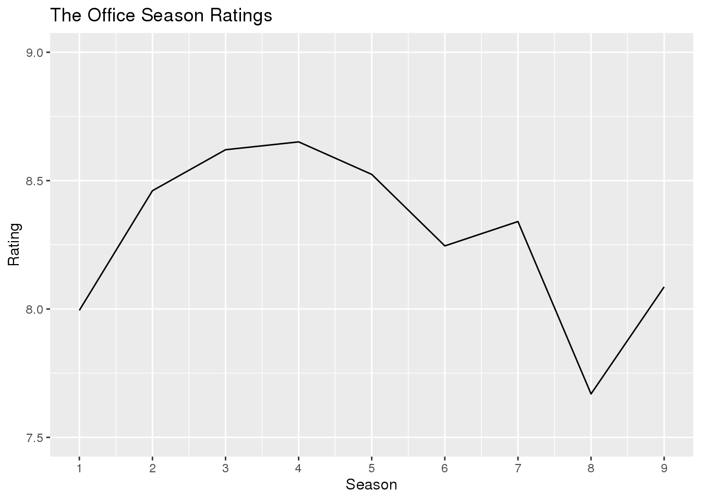

For this project, I am going to be looking at Office Ratings data set contained in the library “schrute” which I installed through R. This data set contains ratings of each episode from the famous US adapted sitcom television series. The data has 55,130 observation and 12 variables. The variable season tells us which season of the show is being selected from. The variable episode tells us which episode of the season is being selected. The variable episode_name tells us the name of the episode. The variable director and writer tells us the director and writer of the episode, respectively. The variable character displays the cahracter that is speaking, and the variable text shows what they said. The variable imdb_rating tell us the rating given for the episode by imdb. The variable total_votes tells us how many people contributed to the imdb_rating; and finally, the variable air_data tells us when that specific episode was aired.
Here is a preview of the data set I am using…
## Observations: 55,130
## Variables: 12
## $ index <int> 1, 2, 3, 4, 5, 6, 7, 8, 9, 10, 11, 12, 13, 14, 15, 1…
## $ season <int> 1, 1, 1, 1, 1, 1, 1, 1, 1, 1, 1, 1, 1, 1, 1, 1, 1, 1…
## $ episode <int> 1, 1, 1, 1, 1, 1, 1, 1, 1, 1, 1, 1, 1, 1, 1, 1, 1, 1…
## $ episode_name <chr> "Pilot", "Pilot", "Pilot", "Pilot", "Pilot", "Pilot"…
## $ director <chr> "Ken Kwapis", "Ken Kwapis", "Ken Kwapis", "Ken Kwapi…
## $ writer <chr> "Ricky Gervais;Stephen Merchant;Greg Daniels", "Rick…
## $ character <chr> "Michael", "Jim", "Michael", "Jim", "Michael", "Mich…
## $ text <chr> "All right Jim. Your quarterlies look very good. How…
## $ text_w_direction <chr> "All right Jim. Your quarterlies look very good. How…
## $ imdb_rating <dbl> 7.6, 7.6, 7.6, 7.6, 7.6, 7.6, 7.6, 7.6, 7.6, 7.6, 7.…
## $ total_votes <int> 3706, 3706, 3706, 3706, 3706, 3706, 3706, 3706, 3706…
## $ air_date <fct> 2005-03-24, 2005-03-24, 2005-03-24, 2005-03-24, 2005…## # A tibble: 5 x 4
## # Groups: episode_name, season [5]
## episode_name season episode max_rating
## <chr> <int> <int> <dbl>
## 1 Finale 9 24 9.7
## 2 Goodbye, Michael 7 22 9.7
## 3 Stress Relief (Parts 1&2) 5 14 9.6
## 4 A.A.R.M 9 22 9.3
## 5 Casino Night 2 22 9.3